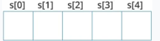

- There are no strings in C, but char arrays (we may say string..).
- A String will always end with a null char (\0).
- Without a null char, the array is merely a char array (not a string).
- If declared empty, the string is non assignable - strcpy() must be used.
- Otherwise, declaration and initialization must be done together.
Initialization may be done in serval ways:- char c[] = "ABCD"; // Size is not required with initialization.
- char c[5] = "ABCD"; // The last slot is required for null char.
- char c[36] = "ABCD"; // Array size may be greater than string itself.
- char c[] = {'a', 'b', 'c', 'd', '\0'};
- char c[5] = {'a', 'b', 'c', 'd', '\0'};
Declaration of an empty string must come with size:- char s[5];
- char s[5] = "";

the last slot is for a null char, so that s[n] may contain (n-1) char's.